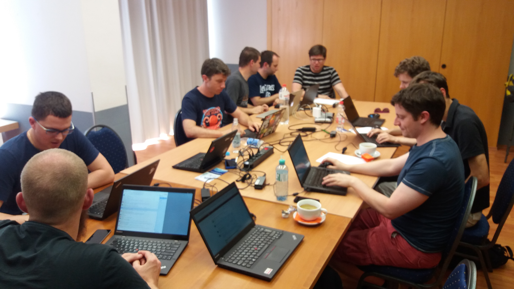
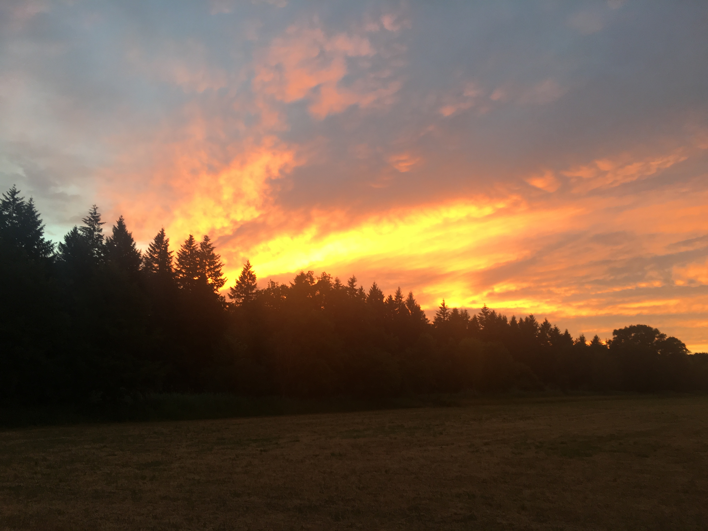

There’s a Cockpit Hackfest underway in Karlsruhe, Germany. We’re working on the virtual machine functionality in Cockpit.

That means interacting with libvirt. Although libvirt has remoting functionality it has no API that’s actually remotable and callable from Cockpit javascript code. So Lars and Pavel started working on a DBus wrapper for the API.
At the same time, Martin is working on making the current virsh based access to libvirt more performant, so we don’t block on waiting until the DBus wrapper is done.
Lots of work was done understanding redux. The initial machines code in Cockpit was written using redux, and we needed to map it’s concept of models and state to the Cockpit way of storing state on the server and UI concepts like dialogs. Everyone was involved.
Andreas, Garrett have been working on designs for creating a virtual machine and editing virtual machines. Dominik started work on implementing that code.
Marius worked on deletion of virtual machines, and already has a pull request open.
Stef worked on the integration tests for the virtual machine stuff and is booting nested VMs using nested images.

Wheeee.